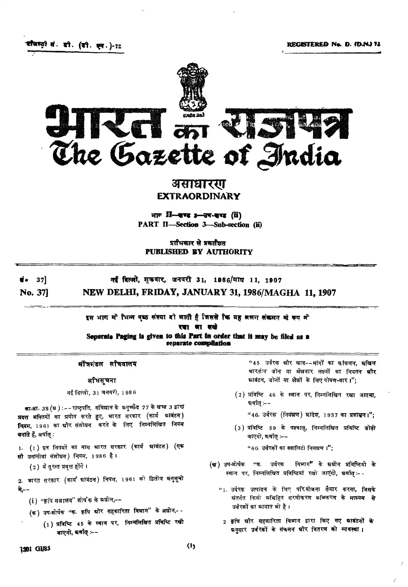
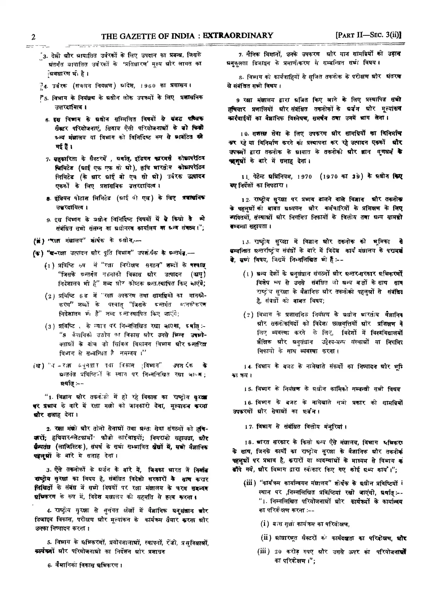
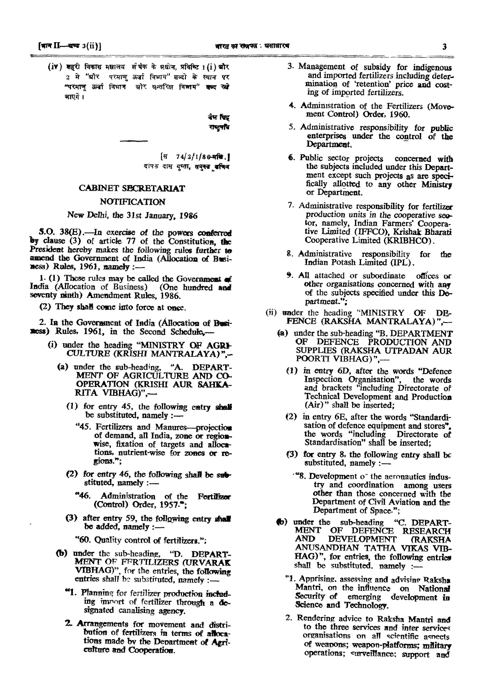
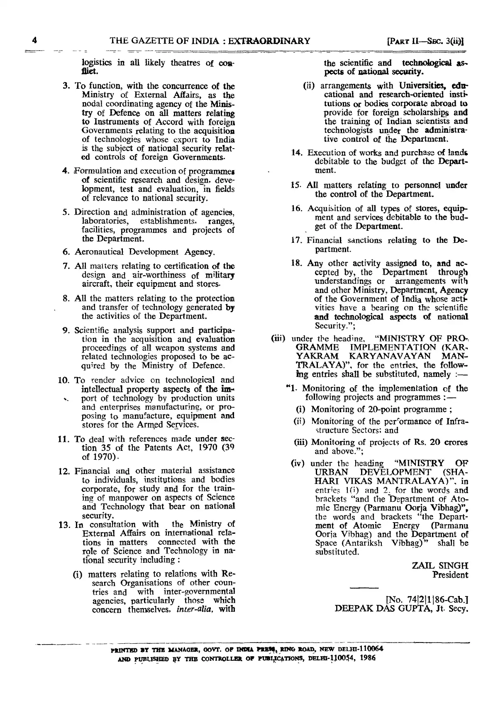

Amendment #179 (S.O. 38(E), 1986)
10 changes: 0 to the First Schedule, 10 to the Second Schedule. 9 applied1 not applied
What it did to the ministries
- grewMinistry of Defence grows from 38 to 47 subjects change 5, 6, 7, 8 · histories: Defence
The order, page by page
Page 1 of 4

Page 2 of 4

Page 3 of 4

12345678Schedule 2 › MINISTRY OF AGRICULTURE › DEPARTMENT OF AGRICULTURE AND COOPERATION › entry 45
- 45. Fertilizers and Manures-projection of demand, all India, zone or regionwise, fixation of targets and allocations, nutrient-wise for zones or regions.
applied at schedule 2 › ministry MINISTRY OF AGRICULTURE › department A › part IV › entry 45 in the Rules after #179
Schedule 2 › MINISTRY OF AGRICULTURE › DEPARTMENT OF AGRICULTURE AND COOPERATION › entry 46
- 46. Administration of the Fertilizer (Control) Order, 1957.*
applied at schedule 2 › ministry MINISTRY OF AGRICULTURE › department A › part IV › entry 46 in the Rules after #179
after Schedule 2 › MINISTRY OF AGRICULTURE › DEPARTMENT OF AGRICULTURE AND COOPERATION › entry 59
- 60. Quality control of fertilizers.
applied at schedule 2 › ministry MINISTRY OF AGRICULTURE › department A › part IV › entry 60 in the Rules after #179
Schedule 2 › MINISTRY OF AGRICULTURE › DEPARTMENT OF FERTILIZERS
- 1. Planning for fertilizer production including import of fertilizer through a designated canalising agency.
- 2. Arrangements for movement and distribution of fertilizers in terms of allocations made by the Department of Agriculture and Cooperation.
- 3. Management of subsidy for indigenous and imported fertilizers including determination of 'retention' price and costing of imported fertilizers.
- 4. Administration of the Fertilizers (Movement Control) Order, 1960.
- 5. Administrative responsibility for public enterprises under the control of the Department.
- 6. Public sector projects concerned with the subjects included under this Department except such projects as are specifically allotted to any other Ministry or Department.
and 3 more
- 7. Administrative responsibility for fertilizer production units in the cooperative seotor, namely, Indian Farmers' Cooperative Limited (IFFCO), Krishak Bharati Cooperative Limited (KRIBHCO).
- 8. Administrative responsibility for the Indian Potash Limited (IPL).
- 9. All attached or subordinate offices or other organisations concerned with any of the subjects specified under this Department.
applied at schedule 2 › ministry MINISTRY OF AGRICULTURE › department D in the Rules after #179
Schedule 2 › MINISTRY OF DEFENCE › DEPARTMENT OF DEFENCE PRODUCTION AND SUPPLIES › entry 6D
for “Defence Inspection Organisation” read “Defence Inspection Organisation including Directorate of Technical Development and Production (Air)”
applied at schedule 2 › ministry MINISTRY OF DEFENCE (RANSHA MAN TRALAYA) › department B › entry 6D in the Rules after #179
Schedule 2 › MINISTRY OF DEFENCE › DEPARTMENT OF DEFENCE PRODUCTION AND SUPPLIES › entry 6E
for “Standardisation of defence equipment and stores” read “Standardisation of defence equipment and stores including Directorate of Standardisation”
applied at schedule 2 › ministry MINISTRY OF DEFENCE (RANSHA MAN TRALAYA) › department B › entry 6E in the Rules after #179
states inferred loose
Schedule 2 › MINISTRY OF DEFENCE › DEPARTMENT OF DEFENCE PRODUCTION AND SUPPLIES › entry 8
- 8. Development of the aeronautics industry and coordination among users other than those concerned with the Department of Civil Aviation and the Department of Space.
applied at schedule 2 › ministry MINISTRY OF DEFENCE (RANSHA MAN TRALAYA) › department B › entry 8 in the Rules after #179
Schedule 2 › MINISTRY OF DEFENCE › DEPARTMENT OF DEFENCE RESEARCH AND DEVELOPMENT
- 1. Apprising, assessing and advising Raksha Mantri, on the influence on National Security of emerging development in Science and Technology.
- 2. Rendering advice to Raksha Mantri and to the three services and inter services organisations on all scientific aspects of weapons; weapon-platforms; military operations; surveillance; support and = logistics in all likely theatres of confliet.
- 3. To function, with the concurrence of the Ministry of External Affairs, as the nodal coordinating agency of the Ministry of Defence on all matters relating to Instruments of Accord with foreign Governments relating to the acquisition of technologies whose export to India is the subject of national…
- 4. Formulation and execution of programmes of scientific research and design, development, test and evaluation, in fields of relevance to national security.
- 5. Direction and administration of agencies laboratories, establishments. ranges facilities, programmes and projects of the Department.
- 6. Aeronautical Development Agency.
and 14 more
- 7. All matters relating to certification of the design and air-worthiness of military aircraft, their equipment and stores.
- 8. All the matters relating to the protection and transfer of technology generated by the activities of the Department.
- 9. Scientific analysis support and participation in the acquisition and evaluation proceedings of all weapon systems and related technologies proposed to be acquired by the Ministry of Defence.
- 10. To render advice on technological and intellectual property aspects of the import of technology by production units and enterprises manufacturing, or proposing to manufacture, equipment and stores for the Armed Services.
- 11. To deal with references made under section 35 of the Patents Act, 1970 (39 of 1970).
- 12. Financial and other material assistance to individuals, institutions and bodies. corporate, for study and for the training of manpower on aspects of Science and Technology that bear on national security.
- 13. In consultation with the Ministry of External Affairs on international relations in matters connected with the role of Science and Technology in national security including :
- i. matters relating to relations with Research Organisations of other countries and with inter-governmental agencies, particularly those which concern themselves, inter-alia, with PRINTED BY THE MANAGER, GOVT. OF INDIA the scientific and technological aspects of national security.
- ii. arrangements with Universities, edu cational and research-oriented insti tutions or bodies corporate abroad to provide for foreign scholarships and the training of Indian scientists and technologists under the administrative control of the Department.
- 14. Execution of works and purchase of lands debitable to the budget of the Department.
- 15. All matters relating to personnel under the control of the Department.
- 16. Acquisition of all types of stores, equipment and services debitable to the budget of the Department.
- 17. Financial sanctions relating to the Department.
- 18. Any other activity assigned to, and accepted by, the Department through understandings or arrangements with and other Ministry, Department, Agency of the Government of India whose acti vities have a bearing on the scientific and technological aspects of national Security.
applied at schedule 2 › ministry MINISTRY OF DEFENCE (RANSHA MAN TRALAYA) › department C in the Rules after #179
read page break
Page 4 of 4

910Schedule 2 › MINISTRY OF PROGRAMME IMPLEMENTATION
- 1. Monitoring of the implementation of the following projects and programmes :-
- i. Monitoring of 20-point programme
- ii. Monitoring of the performance of Infrastructure Sectors; and
- iii. Monitoring of projects of Rs. 20 crores and above.
applied at schedule 2 › ministry MINISTRY OF PROGRAMME IMPLEMENTA- TION in the Rules after #179
Schedule 2 › MINISTRY OF URBAN DEVELOPMENT › entry 1 › item i; Schedule 2 › MINISTRY OF URBAN DEVELOPMENT › entry 2
for “and the Department of Atomic Energy (Parmanu Oorja Vibhag)” read “the Department of Atomic Energy (Parmanu Oorja Vibhag) and the Department of Space (Antariksh Vibhag)”
not applied (the change could not be placed in the Rules as read; see How this document was read)
How this document was read
Changes placed by an inference rule
| Change | Rule | Status | What |
|---|---|---|---|
| 6 | loose | accepted | change 6: the words to substitute "Standardisation of defence equipment and stores" found loosely in schedule 2 › ministry MINISTRY OF DEFENCE (RANSHA MAN TRALAYA) › department B › entry 6E as… |
Known issues
| Change | Issue | Known as |
|---|---|---|
| 10 | change 10: no item i under schedule 2 › ministry MINISTRY OF URBAN DEVELOPMENT › entry 1 | Items |
From the Government of India (Allocation of Business) Rules, 1961 and their amendments, as published by the Cabinet Secretariat (cabsec.gov.in), read by orgpedia. The readings of the older scanned gazettes have known gaps.